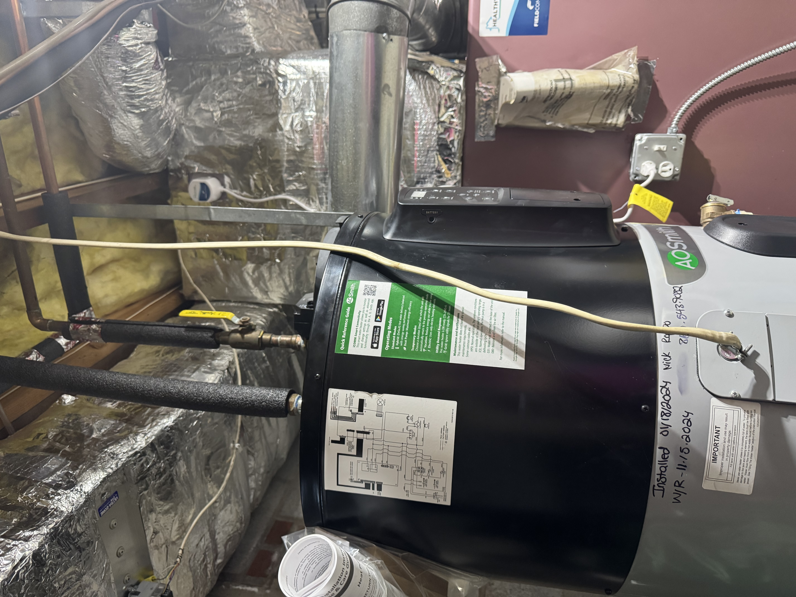

My wife and I had been looking to replace our aging water heater and take advantage of federal rebates available for heat pump water heaters — and to lower our electric bill in the process. When we called around to local plumbers, many told us they simply didn’t install hybrid heat pump units. Looking for simplicity and confidence, we decided to go through Lowe’s. That turned out to be an incredibly regrettable mistake. This is that story.
Initial Purchase & Installation
Ordering through Lowe’s was straightforward. We called, explained what we wanted, and received a quote of approximately $3,600 for the unit and installation. It felt like the right call. That confidence didn’t survive the day of the install.
- Final invoice: $4,424 — $800+ over the original estimate. Before any work began, we were presented with a revised number. No consumer is going to feel good about agreeing to a price, then being told it’s $800 more before the first tool is picked up. It felt like a bait-and-switch.
- Drip pan: Charged as an add-on. This is a basic component any experienced installer should know is required upfront — not a surprise line item on install day.
- Condensate pump: Billed at approximately $400 — a significant markup over its $60 retail price.
- Labor: Billed at $1,825 for one plumber and one apprentice. I agreed to the rate upfront, but the job moved surprisingly quickly — and in retrospect, the labor cost was difficult to reconcile with how fast it was done. It’s worth noting that this is the same figure Lowe’s is now implying I’ll need to spend again to have the unit replaced.
- Condensate pump left unsecured on the floor: The unit was unboxed, set on the floor, and plugged into a standard outlet using an extension cord I provided. It was never hardwired or secured in place.
- Improper condensate drainage — against manufacturer specifications: Rather than routing condensate to a dedicated floor drain or utility sink as A.O. Smith’s installation guidelines specify, the installers plumbed the pump to drain up and over the furnace and into the A/C unit’s condensate line — which exits the home through an exterior pipe. In freezing Connecticut temperatures, that exterior line freezes solid, leaving condensate nowhere to go. This is not an approved installation method.
- Unsecured drain hose: The drain hose from the water heater into the condensate pump was simply dropped into the pump opening — never fastened or secured. Later, during a routine furnace service, this hose was easily knocked free, dumping the condensate line directly onto the basement floor.
- Questionable electrical work: The condensate pump appears to have been wired with Romex (NM cable) running down from the ceiling and entering directly into the side of the unit at approximately 4.5 feet off the ground. Romex is generally not approved for exposed runs in damp locations such as a basement in close proximity to a water heater. Without a proper junction box, conduit, or strain relief at the point of entry, this type of installation would likely fail inspection in most jurisdictions. I am not an electrician, but this did not look like professional work.
- Leak detector not installed: The leak detector shutoff unit I had purchased was not brought to the job at all.
- Getting it fixed was its own ordeal: Resolving the missing leak detector meant navigating Lowe’s → Lowe’s Home Improvement → 1-800-Heaters → local plumber — every call made by me. Accountability at every level was non-existent, and getting anyone to come back out was exhausting.
Unit Fails for the First Time
- The unit began showing signs of failure with no error codes displayed. Hot water became severely limited — not enough to finish a shower, or fill a bath for my daughter. This persisted for two to three weeks before I contacted Lowe’s.
- Getting resolution was not easy: What followed was hours on the phone — I estimate two to three hours total — being routed between multiple departments before anyone could actually help. This is not a reasonable experience for a customer with a $4,400 unit that stopped working.
- Unit was ultimately replaced, but I was never told what failed, what caused it, or who bore the cost of the replacement. No root cause was ever communicated.
Symptoms Return, Then a Second Full Failure
- Late March: The exact symptoms from November 2024 began reappearing. We couldn’t give our daughter a full warm bath. Showers were going cold first thing in the morning. We knew immediately something was wrong again.
- Saturday, April 11 — First contact: I called Lowe’s to report the issue and spent at least an hour on the phone. The representative couldn’t locate my purchase at all — I eventually learned this is because the order was placed through what functions as a separate entity called “Lowe’s Home Improvement,” their water heater division. I was told to call the hot water heater department the following day.
- Sunday, April 12: Called the hot water heater department — immediately redirected to Customer Solutions. Left a message and never received a call back that day.
- Monday, April 13: Customer Solutions called back and redirected me to A.O. Smith. A.O. Smith confirmed warranty coverage for parts and the tank only — not labor. I requested a supervisor callback from Lowe’s Water Heater division. That call has never come.
- The resolution offered: Eventually, after additional calls spanning several more days, a representative calling on behalf of Lowe’s offered approximately $200 — roughly 5% of the original purchase price. He was unable to identify who he actually worked for when asked directly, initially gave me the wrong warranty expiration date, and only corrected it after I pushed back. The offer itself didn’t even cover the cost of a single service call, which typically runs $200–$500+ for a heat pump water heater.


Substandard installation
Confirmed defects including improper condensate piping against manufacturer specs, unsecured connections, and questionable electrical work.
No root cause provided
The November 2024 failure resulted in a replacement unit, but no explanation of the failure was ever provided to me.
Unresponsive customer support
Hours on the phone across multiple departments, callbacks that never came, and representatives who couldn’t identify their own employer.
Inadequate resolution offered
A ~$200 credit on a $4,424 purchase that has failed twice is not a reasonable response to this situation.
Reasonable resolution from Lowe’s
- Coverage of labor costs for the current repair, given the ongoing failures
- Acknowledgment of the installation defects identified by a third party
- A clear explanation of what caused both failures
- Direct contact with an actual Lowe’s employee — not a third-party contractor